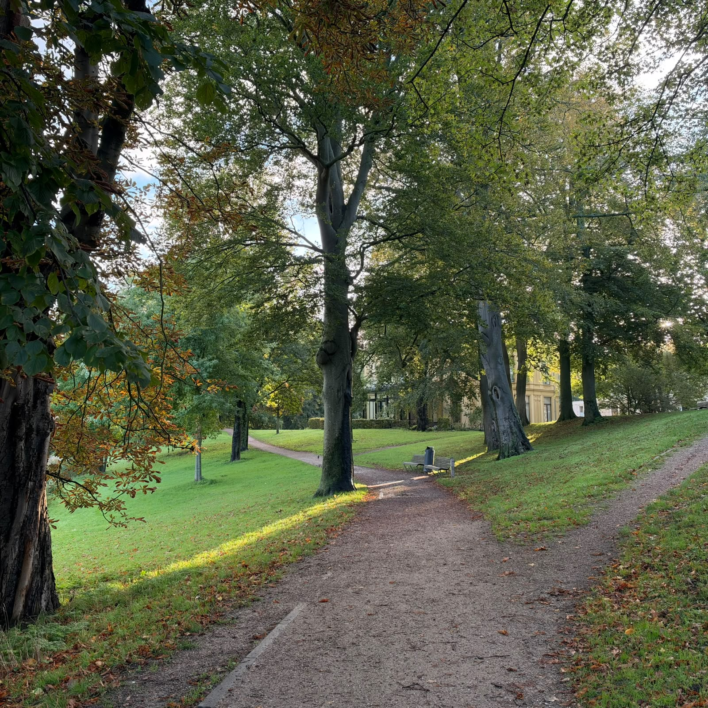
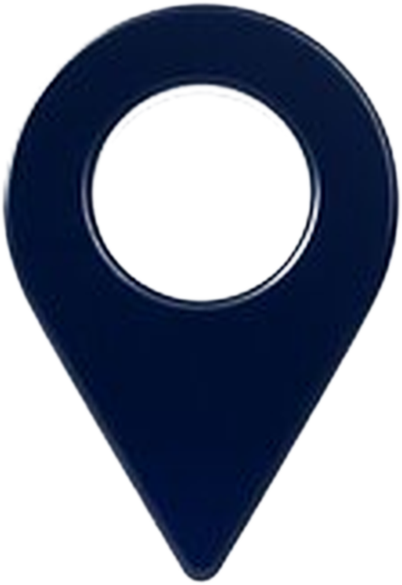
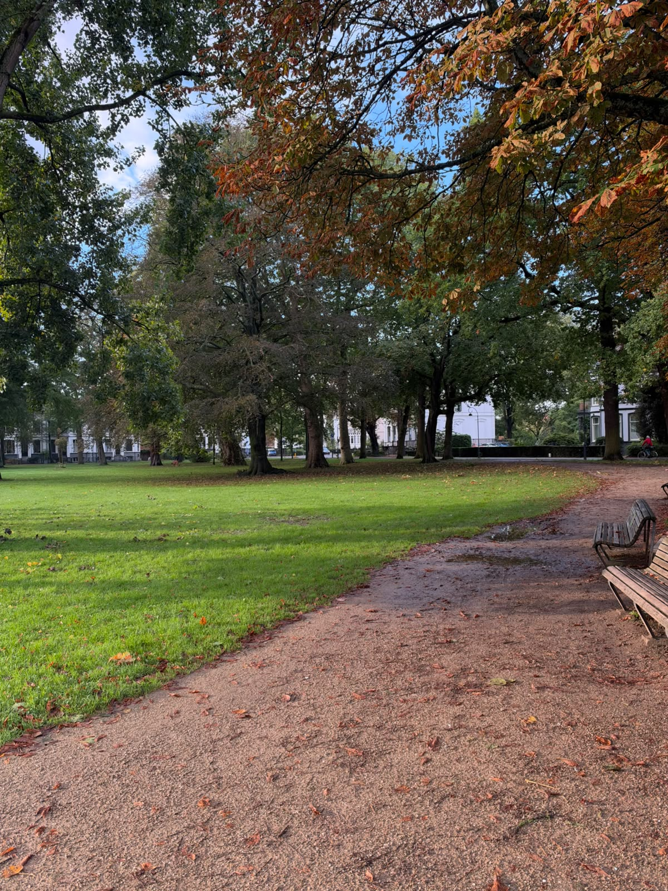
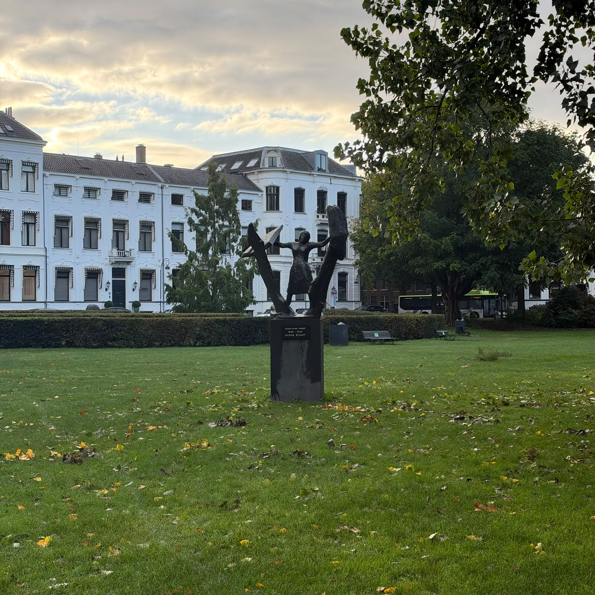

Haarlemmerhout
The oldest public park in the Netherlands, with large old trees, open lawns and walking paths. A peaceful place just outside the centre.

Location: Haarlemmerhout, HaarlemParks & Nature

The oldest public park in the Netherlands, with large old trees, open lawns and walking paths. A peaceful place just outside the centre.

Location: Haarlemmerhout, Haarlem
A small, calm city park with grass, benches and trees. A nice spot to rest during a walk through the centre.
Location: Kenaupark, Haarlem

A quiet green park with mature trees and a relaxed atmosphere, close to the city centre and the river.
Location: Frederikspark, Haarlem